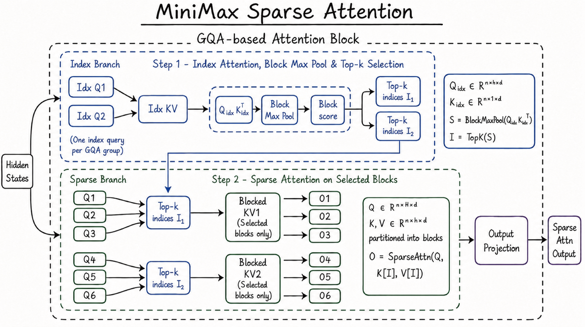

← Home홈 · Inference추론 · MiniMax M3
MiniMax's pitch: "the first open-weight model" to combine three frontier capabilities at once — frontier coding/agentic ability, a 1M-token context, and native multimodality. It's a ~428B-total / ~23B-active MoE; the engineering core is MSA (MiniMax Sparse Attention), which cuts per-token compute at 1M context by ~20×. Weights are now open on HuggingFace (license: minimax-community) and the technical report is out — arXiv:2606.13392, "MiniMax Sparse Attention." The hosted API/subscription is paid; self-hosting the weights is free of usage fees (check the license).
MiniMax의 주장: 세 가지 프런티어 능력을 한꺼번에 갖춘 "최초의 오픈웨이트 모델" — 프런티어 코딩/에이전트 능력, 1M 토큰 컨텍스트, 네이티브 멀티모달. ~428B 총 / ~23B 활성 MoE이며, 엔지니어링 핵심은 MSA(MiniMax Sparse Attention)로 1M 컨텍스트에서 토큰당 연산을 ~20배 줄인다. 가중치는 이제 HuggingFace에 공개(라이선스 minimax-community), 테크니컬 리포트도 공개 — arXiv:2606.13392 "MiniMax Sparse Attention". 호스팅 API/구독은 유료, 가중치 자가호스팅은 사용료 없음(라이선스 확인 필요).
M3 is MiniMax's frontier model aimed squarely at coding and computer-use agents — long, multi-step tasks where the model writes code, runs tools, and reads back results over a very long context. The headline claim is positioning, not a single number: M3는 코딩·컴퓨터 사용 에이전트를 정조준한 MiniMax의 프런티어 모델이다 — 모델이 코드를 쓰고, 도구를 실행하고, 매우 긴 컨텍스트에서 결과를 되읽는 길고 다단계인 작업용. 핵심 주장은 단일 수치가 아니라 포지셔닝이다:
"the first and only open-weight model to bring all three together" — frontier coding, 1M context, and native multimodality.
— MiniMax M3 blog · minimax.io/blog/minimax-m3
Open-weight — and now actually released. The 2026-06-01 launch post promised weights + a technical report "over the next 10 days," and both have since landed: weights at huggingface.co/MiniMaxAI/MiniMax-M3 (license minimax-community, a custom license — verify terms before commercial use; MiniMax's prior "Modified-MIT" drew "faux-open" criticism) and the report at arXiv:2606.13392. So earlier "pending" notes are now resolved — the numbers below are from the model card / report, not just the launch blog.
오픈웨이트 — 이제 실제로 공개됨. 2026-06-01 출시 글이 가중치+테크리포트를 "앞으로 10일 내" 공개한다 했고, 둘 다 나왔다: 가중치 huggingface.co/MiniMaxAI/MiniMax-M3(라이선스 minimax-community — 커스텀 라이선스라 상업 사용 전 확인 필요; MiniMax는 과거 "Modified-MIT"로 "가짜 오픈" 비판을 받은 적 있음), 리포트 arXiv:2606.13392. 즉 앞서의 "예정"은 이제 해소됐고, 아래 수치는 출시 블로그뿐 아니라 모델 카드/리포트 기준이다.
/models/text/ URL, M3 is natively multimodal: text in/out plus image and video understanding and computer/desktop operation. MiniMax stresses it was trained mixed-modality "from Step 0" — i.e. vision is a core capability, not a bolt-on adapter.
URL은 /models/text/ 아래지만, M3는 네이티브 멀티모달이다: 텍스트 입출력 + 이미지·비디오 이해 + 컴퓨터/데스크톱 조작. MiniMax는 "Step 0부터" 혼합 모달리티로 학습했다고 강조 — 비전이 나중에 붙인 어댑터가 아니라 핵심 능력이라는 뜻.
| Channel채널 | In입력 | Out출력 | Note비고 |
|---|---|---|---|
| Text | ✅ | ✅ | primary; thinking on/off toggle기본; thinking on/off 토글 |
| Image이미지 | ✅ | — | native, "from Step 0"네이티브, "Step 0부터" |
| Video비디오 | ✅ | — | long-video understanding (Video-MME 84.6 @512 frames)장영상 이해 (Video-MME 84.6 @512프레임) |
| Computer/desktop컴퓨터/데스크톱 | ✅ (screen)(화면) | ✅ (actions)(동작) | computer-use agent (OSWorld 70.06)컴퓨터 사용 에이전트 (OSWorld 70.06) |
"Multimodal is a native core capability, not a superficial add-on."
— Model page · minimax.io/models/text/m3
Scale. ~428B total parameters with ~23B activated per token — a sparse MoE (the model card doesn't give expert count / layer specifics; see the report). Weights are BF16. The attention core is MSA — the technical report (arXiv:2606.13392) is literally titled "MiniMax Sparse Attention." 크기. 총 ~428B 파라미터, 토큰당 ~23B 활성 — 희소 MoE(전문가 수·층 세부는 모델 카드에 없음, 리포트 참조). 가중치 BF16. 어텐션 핵심은 MSA — 테크리포트(arXiv:2606.13392) 제목이 곧 "MiniMax Sparse Attention".
Standard attention has every query look at every key — O(N²), which explodes at 1M tokens. MSA is block-sparse: it splits the KV cache into blocks and, per query, attends to only a selected few blocks (a pre-filtering step picks the relevant ones), so cost scales ~O(N·k). MiniMax says it "can partition the KV into blocks more precisely" than DeepSeek's DSA or MoBA, and that versus GQA it "dramatically reduces attention compute and memory while preserving quality." 일반 어텐션은 모든 쿼리가 모든 키를 본다 — O(N²)이라 1M 토큰에서 폭증한다. MSA는 블록 희소: KV 캐시를 블록으로 쪼개고, 쿼리마다 선택된 일부 블록만 본다(사전 필터링이 관련 블록을 고름) → 비용 ~O(N·k). MiniMax는 DeepSeek DSA·MoBA보다 "KV를 더 정밀하게 블록 분할"하고, GQA 대비 "품질을 유지하며 어텐션 연산·메모리를 크게 절감"한다고 한다.

This is the systems story and the reason MSA exists: dense attention's cost grows with context length, so a 1M-token agent loop is brutal to serve. MiniMax's reported MSA gains at 1M context: 이게 시스템 이야기이자 MSA가 존재하는 이유다: 덴스 어텐션은 컨텍스트 길이에 비례해 비용이 커져서, 1M 토큰 에이전트 루프는 서빙이 가혹하다. MiniMax가 보고한 1M 컨텍스트에서의 MSA 이득:
| Metric (at 1M context)지표 (1M 컨텍스트) | MSA claimMSA 주장 |
|---|---|
| Per-token compute vs prev-gen토큰당 연산 (전세대 대비) | ~1/20 |
| Prefill speedup프리필 가속 | >9× |
| Decode speedup디코드 가속 | >15× |
| MSA op vs Flash-Sparse-Attn / flash-mobaMSA 연산 vs Flash-Sparse-Attn / flash-moba | >4× |
At 1M context, per-token compute is "just 1/20 that of the previous-generation model"; prefilling ">9×" and decoding ">15x" faster.
— MiniMax M3 blog · minimax.io/blog/minimax-m3
Why it matters for inference. Coding/computer-use agents are exactly the workload that blows up context — long files, tool outputs, screenshots, multi-hour loops. Making the per-token cost roughly flat at 1M is what turns "1M context" from a spec-sheet number into something you can actually run an agent on. (No raw tokens/s figure is published; the claims are relative speedups.) 추론 관점의 의미. 코딩·컴퓨터 사용 에이전트가 바로 컨텍스트를 폭증시키는 워크로드다 — 긴 파일, 도구 출력, 스크린샷, 수 시간 루프. 1M에서 토큰당 비용을 거의 평탄하게 만드는 것이, "1M 컨텍스트"를 스펙시트 숫자에서 실제로 에이전트를 돌릴 수 있는 것으로 바꾼다. (절대 tok/s 수치는 비공개; 주장은 상대 가속이다.)
Two disclosed training ideas, both aimed at agents: (1) an interactive user-simulator framework for coding/agentic training (so the model practices multi-turn tool use against a simulated user), and (2) a re-architected pretraining data pipeline producing large volumes of interleaved (mixed text+vision) data. RL/distillation specifics and data scale are not given. 공개된 학습 아이디어 둘, 둘 다 에이전트 지향: (1) 코딩/에이전트 학습용 대화형 유저 시뮬레이터 프레임워크(모의 사용자 상대로 다턴 도구 사용을 연습), (2) 대량의 인터리브드(텍스트+비전 혼합) 데이터를 만드는 재설계된 사전학습 파이프라인. RL/증류 세부와 데이터 규모는 미공개.
It ships with MiniMax Code, an agent product trained with M3 that supports computer use, built on the open-source OpenCode and Pi projects. Two real long-horizon runs MiniMax highlights:
MiniMax Code(M3로 학습된, 컴퓨터 사용 지원 에이전트 제품)와 함께 출시되며, 오픈소스 OpenCode·Pi 위에 만들어졌다. MiniMax가 내세운 두 장기 실행 사례:
~12 h → 18 commits, 23 experimental figures.~12시간 → 커밋 18개, 실험 그림 23개.
~24 h, 147 benchmark submissions & 1,959 tool calls; Hopper FP8 peak util 7.6% → 71.3% (9.4×); best at submission 145.~24시간, 벤치 제출 147회·도구 호출 1,959회; Hopper FP8 피크 사용률 7.6% → 71.3%(9.4×); 145번째 제출이 최고.
From the launch materials (vendor-reported). Mixed coding / agentic / multimodal suite:출시 자료 기준(벤더 보고). 코딩·에이전트·멀티모달 혼합:
| Benchmark벤치마크 | M3 | Note비고 |
|---|---|---|
| SWE-Bench Pro | 59.0% | real-world SWE실세계 SWE |
| Terminal-Bench 2.1 | 66.0% | terminal/agentic터미널/에이전트 |
| SWE-fficiency | 34.8% | |
| KernelBench (Hard) | 28.8% | GPU kernelsGPU 커널 |
| MCP Atlas | 74.2% | tool/MCP use도구/MCP 사용 |
| BrowseComp | 83.5 | vs Opus 4.7 79.3Opus 4.7 79.3 대비 상회 |
| OSWorld-Verified | 70.06% | computer use, Max Steps 200 (68.70 @100)컴퓨터 사용, Max Steps 200 (100스텝 68.70) |
| Video-MME | 84.6 | @512 frames (video)@512프레임 (비디오) |
| PostTrainBench | 37.1 | #3 overall — Opus 4.7 42.4, GPT-5.5 39.3전체 3위 — Opus 4.7 42.4, GPT-5.5 39.3 |
minimax-community license, so you can self-host for free (you only pay for your own GPUs; check the license for commercial terms). So "유료?" → using their API costs money; running the model yourself does not.
두 가지를 구분. (1) MiniMax 호스팅 서비스는 유료 — 구독 토큰 플랜 + 사용량 기반 API(아래). (2) 가중치는 오픈(HuggingFace, minimax-community 라이선스)이라 직접 띄우면 무료(본인 GPU 비용만; 상업 사용은 라이선스 확인). 즉 "유료?" → 그들의 API를 쓰면 돈이 들고, 직접 돌리면 사용료는 없다.
| Plan | Price가격 | Tokens / month월 토큰 |
|---|---|---|
| Plus | $20 | ~1.7B |
| Max | $50 | ~5.1B |
| Ultra | $120 | ~9.8B |
API: ≤512K input at standard rate, >512K at a long-context rate; thinking on/off share the same price; service tiers standard / priority.API: 입력 ≤512K 표준요율, >512K 장문요율; thinking on/off 동일 가격; 서비스 티어 standard / priority.
With weights now on HuggingFace and a GGUF build already circulating, early reception centers on three things: the ~428B/23B MoE at 1M context, MSA as the efficiency story, and a license caveat (minimax-community — watch commercial terms, given MiniMax's earlier "Modified-MIT" criticism). One practical note from the community: MSA isn't supported in llama.cpp yet, so GGUF inference falls back to dense attention (losing the long-context speedup). MiniMax is racing the open-weight frontier (DeepSeek, Qwen, Kimi, GLM) but differentiates on native multimodality + 1M context + a new sparse-attention operator rather than raw parameter count.
가중치가 HuggingFace에 올라오고 GGUF 빌드도 도는 가운데, 초기 반응은 셋에 모인다: 1M 컨텍스트의 ~428B/23B MoE, 효율 서사로서의 MSA, 그리고 라이선스 주의(minimax-community — 과거 "Modified-MIT" 비판이 있던 만큼 상업 조건 확인). 실무 메모 하나: MSA는 아직 llama.cpp 미지원이라 GGUF 추론은 덴스 어텐션으로 폴백한다(장문 가속 손실). MiniMax는 오픈웨이트 프런티어(DeepSeek·Qwen·Kimi·GLM)와 경쟁하되, 원시 파라미터 수가 아니라 네이티브 멀티모달 + 1M 컨텍스트 + 새 희소 어텐션 연산자로 차별화한다.
minimax-community license fine print for commercial use. A promising, agent-shaped, multimodal open-weight model — now actually downloadable.
우리 관점(이 추론 스터디 레포 기준). 흥미로운 건 리더보드가 아니라 MSA다. 코딩·컴퓨터 사용 에이전트는 어텐션의 최악 케이스다 — 도구 호출·스크린샷마다 컨텍스트가 단조 증가한다. 토큰당 비용을 1M까지 ~평탄하게 유지하는 커스텀 블록 희소 연산자는, 장기 에이전트를 감당 가능하게 만드는 바로 그 추론 시스템 레버다 — 우리 다른 노트(KV 비용, 장문 서빙)와 같은 주제. 가중치·리포트가 나온 지금 검증할 점: (1) MoE 전문가 구성(수·top-k가 카드엔 아직 없음 — arXiv:2606.13392 참조), (2) 상대 가속이 아닌 실제 tok/s, (3) 1M에서 MSA 정확도가 덴스 대비 유지되는지, (4) 독립적 멀티모달·코딩 평가, (5) 상업 사용 시 minimax-community 라이선스 세부. 유망하고 에이전트 지향이며 멀티모달인 오픈웨이트 모델 — 이제 실제로 받을 수 있다.